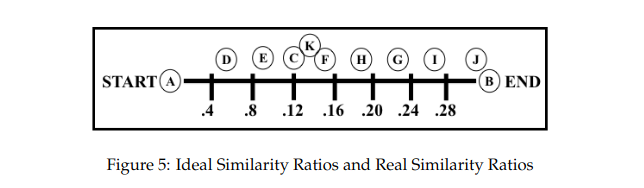
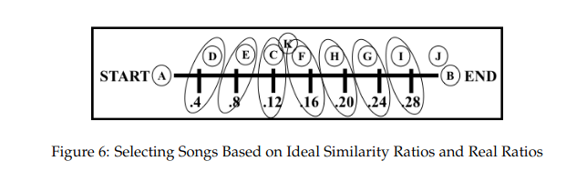

üéµ Smart Playlist Generation: Graph Algorithms for Seamless Music Flow
üìò Section 1: Introduction & Problem Definition
Modern music services like Spotify and Pandora generate playlists using a single seed song and audio
fingerprinting (based on timbre, tempo, etc.). While this ensures genre consistency, it often fails to
guarantee smooth transitions between consecutive tracks.
To solve this, Flexer et al. (2008) proposed the Start-End Algorithm, which constructs playlists between a
chosen start song (Ss) and end song (Se). It ranks candidates by a similarity ratio and selects songs spaced
evenly across this range.
However, the algorithm has a critical flaw: it does not ensure adjacent song similarity. Songs may fit the
global ratio pattern but still transition abruptly. This can break flow and degrade listening experience.
The image illustrates how the Start-End algorithm attempts to create smooth playlists by evenly spacing songs based on a similarity ratio from a start to an end track. Ideally, this approach assumes that the perceived similarity between consecutive songs will also be smooth and consistent throughout the playlist.
However, the figure reveals the core problem: despite the even spacing in similarity ratios, the actual similarity between adjacent songs can vary greatly. This means that transitions between songs may be sudden or jarring, leading to an inconsistent listening experience that the algorithm fails to fully address.
üîç Technical Insight
The algorithm relies on:
R(i) = sim(i, Se) / sim(Ss, i) But R(i) ≈ R(i+1) does not imply sim(i, i+1) is high. Especially in sparse graphs, adjacent transitions
can break — violating “expertly-determined smoothness” seen in DJ-curated playlists.
Start-End introduces start/end interpolation but fails to ensure local continuity.
This limitation drives the need for graph-based, adjacency-aware algorithms — such as random walks.
2. EAS Algorithm – Graph Construction
2.1 What is an Expertly Authored Stream (EAS)?
An Expertly Authored Stream (EAS) is a curated playlist built by music professionals, such as radio DJs, music supervisors, or editors at streaming platforms. These streams reflect experienced decisions about how songs should flow for mood, theme, and genre cohesion.
Instead of relying on acoustic similarity alone, EAS-based algorithms extract human-approved song relationships by examining which tracks appear next to each other in these playlists. This results in a high-level, context-aware understanding of song transitions—something traditional audio fingerprinting methods often miss.
The EAS algorithm turns a playlist into a weighted directed graph, where:
Nodes represent unique songs.
Directed edges represent adjacent transitions (song A → song B).
Edge weights count how many times the transition occurred across all playlists.
Algorithm 1 – Converting EAS to Weighted Graph
Input : Stream of songs S = [S₁, S₂, ..., Sₙ]
Output: Weighted directed graph G = (V, w)
1. Initialize vertex set V ← all unique songs in S
2. For every pair (u, v) ∈ V × V: set w(u, v) ← 0
3. For i = 1 to n - 1 do:
w(S[i], S[i+1]) ← w(S[i], S[i+1]) + 1
4. Return G = (V, w)
Figure: Weighted adjacency graph generated from curated playlists using Algorithm 1.
2.3 Deriving Song Similarities
Once the graph is constructed, the next step is to convert edge weights into numerical similarity scores. These scores help automatic playlist generators decide which songs are most appropriate to follow a given track.
One-Way Similarity
One-way similarity treats the edge as a transition probability. For a song u, the probability of jumping to song v is calculated as:
sim(u, v) = w(u, v) / Σx w(u, x)
This is useful for modeling directional user behavior (e.g., “what’s most likely to follow song A?”).
Figure: One-way similarity values derived from edge weights, based on outgoing transitions from song A.
Two-Way Similarity
Two-way similarity is a symmetric metric that considers both directions and gives a balanced view of how tightly two songs are related:
sim(u, v) = w(u, v) / (Σx w(u, x) + Σy w(v, y))
This method better handles rare songs that always appear next to the same track—revealing strong, even if infrequent, associations.
Figure: Two-way similarity calculation balances popularity of both connected songs, offering more nuanced similarity values.
3. Start-End Algorithm
3.1 Overview & Intuition
Flexer et al.’s Start-End Algorithm (ISMIR 2008) tries to build a playlist that
smoothly interpolates between a chosen start song Ss and an end song
Se. It does so by ranking every candidate track according to a
similarity ratio that compares how close the track is to each anchor:
R(i) = sim(i, Se) / sim(Ss, i)
Songs are sorted by R(i); then p positions are sampled at equal
“ratio intervals” between R(Ss)=∞ and R(Se)=0.
The closest real song to each ideal position is selected, giving a playlist
[Ss, …, Se].

Figure: Mapping ideal similarity ratios (evenly spaced ticks) to the nearest real songs in the catalogue.
3.2 Algorithmic Steps
Algorithm 2: Start-End Playlist Generation
Input : Song set S, start song Sₛ, end song Sₑ, desired length p
Output: Ordered playlist P
1 Rank every song by similarity to Sₛ → list startSimilarities
2 Rank every song by similarity to Sₑ → list endSimilarities
3 Remove the bottom t% of songs least similar to both anchors
4 Compute step width: step = (R(Sₛ) - R(Sₑ)) / (p + 1)
5 For j = 1 … p do
ideal = R(Sₛ) - j·step
pick song closest to ideal ratio → append to P
6 Return playlist [Sₛ, P, Sₑ]

Figure: Selection of real tracks (A…I) that best match the target similarity ratio positions → final ordering ADECFHGIB.
3.3 Practical Weaknesses
Sparse-graph constraint: every chosen track must be connected
(non-zero similarity) to both Ss and Se.
In real EAS graphs this is rare → algorithm often returns no playlist.
No local guarantee: Even if ratio spacing is perfect,
adjacent similarity sim(i,i+1) can drop sharply (see Figure 16 in
Section 1) resulting in audible “jumps”.
These limitations motivated replacement strategies such as the
Unbiased Random Walk (URW) and Biased Random Walk (BRW),
which use local graph structure instead of a global ratio.
4. Unbiased Random Walk (URW)
4.1 Why Random Walks?
The Unbiased Random Walk (URW) algorithm addresses the structural limitations
of the Start-End method. It performs a Monte Carlo–style walk through the similarity
graph, stepping from one song to another based on local similarity.
At each step, the algorithm selects z random neighbors of the current song
and chooses the one most similar to it. The walk continues until the playlist reaches
a length p and ends at the target song.
Core Parameters
z (greediness): how many neighbors to consider per step
attempts: how many retries before giving up
range: permitted deviation from target length
4.2 Algorithm 3 – URW
Input : start song Ss, end song Se, playlist length p, range r
similarity graph G, greediness z, max attempts
Output: playlist of songs from Ss to Se (or empty list)
1. while attempts < maxAttempts:
2. runner ← Ss
3. playlist ← [Ss]
4. while len(playlist) < p + r:
5. sample z random neighbors of runner
6. pick one with highest sim(runner, neighbor)
7. append to playlist, set runner ← next
8. if runner == Se and length within range:
9. return playlist
10. return []
Figure: As greediness z → ∞, URW becomes deterministic
— always choosing the most similar neighbor. But this increases the risk of getting stuck.
We ran the URW algorithm to generate 239 playlists under different parameter settings:
Playlist Length: 20 songs (with ±5 range)
Similarity Types: One-way and Two-way
Greediness (z): 1 (low), 4 (medium), 7 (high)
Each playlist was evaluated for adjacent similarity and playlist cohesion. Heatmaps and line graphs were created for comparison.
6.2 Adjacent Similarity Trends
The following charts show the average similarity between each song and the next in the playlist, across different values of z:
Figure: One-way similarity (adjacent similarity across 20 songs).Figure: Two-way similarity (adjacent similarity across 20 songs).
6.3 Similarity Matrices (Heatmaps)
The following heatmaps show overall pairwise similarity between all songs in a playlist, averaged across all runs. A darker diagonal band indicates smoother transitions between adjacent songs.
Greediness z = 4 consistently produced the smoothest transitions (highest adjacent similarity).
At z = 7, playlists often fail to complete due to reaching dead ends—despite better local transitions.
Two-way similarity matrices show better global cohesion, while one-way similarity produces stronger adjacent links.
Overall, the URW algorithm proved capable of generating smooth, valid playlists across a range of parameters, with a notable sweet spot at z = 4.
7. Analysis – Comparing URW and Start-End
7.1 Limitations of the Start-End Algorithm
Requires that every song in the playlist has non-zero similarity to Ss and Se.
This creates a rigid requirement that excludes most songs from consideration, especially in sparse graphs.
Relies on a similarity ratio that doesn’t guarantee adjacent smoothness between neighboring songs.
Figure: Start-End's use of similarity ratios may result in uneven transitions.
7.2 Strengths of the URW Algorithm
Does not require global similarity between all songs and both anchors – flexible and scalable.
Guarantees non-zero local similarity between each song and its immediate successor.
Demonstrates a tunable balance between smoothness and success rate via the z parameter.
7.3 Weaknesses and Open Problems
Too greedy (high z) leads to dead ends — the playlist cannot complete.
URW requires multiple attempts due to its non-deterministic, trial-and-error nature.
Some playlists still lack global cohesion – high similarity between distant songs is not guaranteed.
7.4 Design Insights and Observations
A greediness “sweet spot” was found at z = 4, balancing quality and feasibility.
Two-way similarity improves cohesion, but makes the algorithm slightly more prone to failure if normalized improperly.
Smooth transitions do not always imply better overall experience; playlist diversity and surprise may also matter.
Figure: Too much greediness may trap the algorithm with no valid next steps.
This analysis reinforces the idea that while the Start-End method struggles under real-world data sparsity, the URW algorithm adapts well to graph-based structures and provides a strong foundation for more advanced playlist generation techniques.
Evaluates similarity between songs for path planning
URW Algorithm
Randomized Walk over Graph
Local Neighbor Sampling & Selection
O(p × z)
Builds smooth playlists using local similarity
Greediness Heuristic
Random Sampling + Max Scoring
Pick best from z neighbors
O(z) per step
Controls trade-off between randomness and smoothness
Notes:
n = total number of songs
p = desired playlist length
z = greediness level (neighbors checked per step)
d = average degree of a node in the graph
9. Conclusion and References
9.1 Final Recap
We examined two competing approaches to automatic playlist generation: the traditional
Start-End algorithm based on global similarity constraints, and the
Unbiased Random Walk (URW) algorithm built on graph traversal using local
similarity measures derived from Expertly Authored Streams (EAS).
Our analysis showed that URW outperforms the Start-End method in practical settings,
offering better adaptability, smoother transitions, and greater robustness in sparse data
environments. A greediness parameter around z = 4 provides an effective
balance between randomness and playlist cohesion.
The URW framework presents strong opportunities for future expansion by incorporating
audio features, user preferences, and hybrid recommendation architectures.
9.2 References
Flexer, A., Schnitzer, D., Gasser, M., & Widmer, G. (2008).
Playlist generation using start and end songs.
In Proceedings of the 9th International Conference on Music Information Retrieval (ISMIR).
PDF
Ragno, R., Burges, C. J., & Herley, C. (2005).
Inferring similarity between music objects with application to playlist generation.
In Proceedings of the 7th ACM SIGMM International Workshop on Multimedia Information Retrieval.
ACM Digital Library
Curbow, J. (2016).
Blending Two Automatic Playlist Generation Algorithms.
Honors Thesis, Union College.
Union College Repository
Lovász, L. (1993).
Random Walks on Graphs: A Survey.
In Combinatorics, Paul Erdős is Eighty.
PDF
These references ground the theoretical and algorithmic basis for the work presented,
providing a credible foundation for ongoing development in intelligent playlist generation systems.